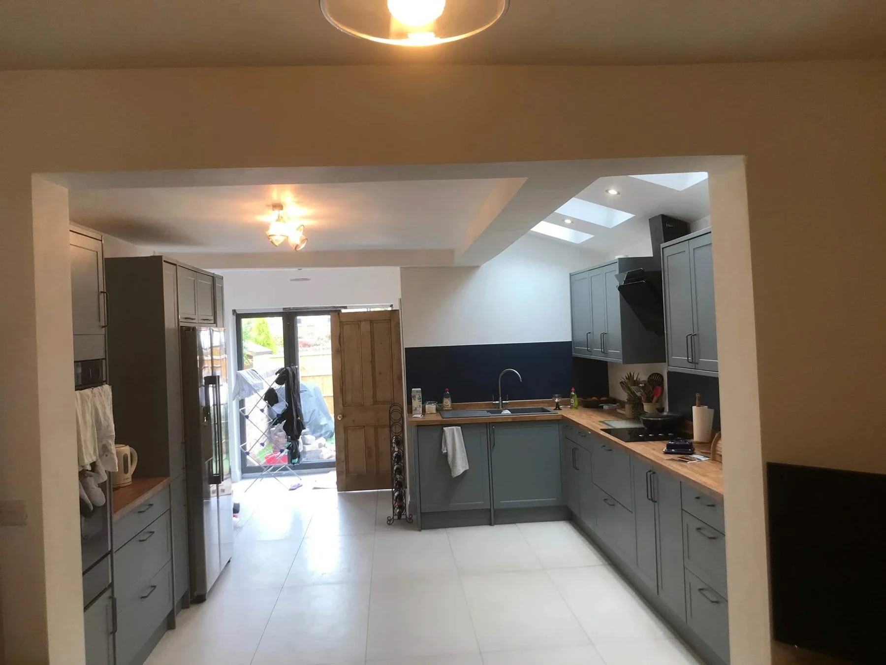
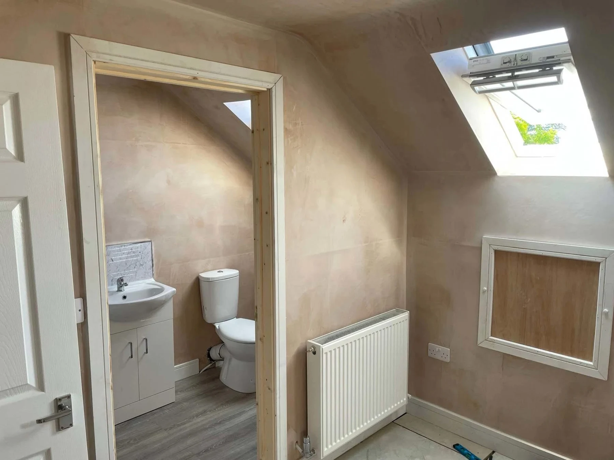

AJB LOFT CONVERSIONS · WORCESTER
Space above.
Possibilities beyond.
Loft conversions, extensions and building alterations in Worcester. Create room for the life you want, in the home you already love.
BUILT AROUND YOUR HOME
More room.
More of the home you love.
AJB Loft Conversions is a family building business serving Worcester and the surrounding area. From loft conversions to extensions and alterations, we help homeowners make better use of their space. Bring your ideas, drawings or questions and start a conversation about what comes next.
Discuss your project →
A DIFFERENT PERSPECTIVE
See the work.
Inside and out.
Roof shapes, natural light and practical room layouts all matter. Explore examples from our loft conversion projects, from the exterior finish to spaces taking shape inside.
Explore loft conversions →

THE AJB PROJECT COLLECTION
More space. Real projects.
Exteriors, interiors and work in progress from our building projects. Select a photograph to enlarge.
FROM IDEAS TO A CLEARER PLAN
A considered start.
Talk through the space
Tell us what you want to change, where you are and how you would use the extra room.
Look at the details
Share plans or photos. Discuss the structure, access, drawings and calculations your project may need.
Agree the next step
Establish the scope and quote before moving forward with the building work.
CUSTOMER FEEDBACK
A home with more to offer.
“Tony was a pleasure to have around, always willing to change plans, and help!”ChristineD-955 · Yell · 11 November 2024Read the customer review on Yell →
BEFORE WE START
Your questions. A useful starting point.
What building work do you cover?
Loft and dormer conversions, extensions, garage conversions, building alterations and roof repairs.
Do I need drawings before contacting you?
You can get in touch at the idea stage. If you already have drawings or calculations, share them so we can discuss the scope. We can also discuss the drawings and calculations your project requires.
Can every loft be converted?
Suitability depends on the roof structure, usable headroom, access and the work proposed. The next step is to assess your property and plans.
Will I need planning permission?
Requirements depend on the property and proposed work. Planning and building regulations are separate considerations and need to be checked for your project before work starts.
Where do you work?
We are based in the Worcester and Upton-upon-Severn area. Send your postcode to check coverage and availability.
Can I send photos and plans?
Yes. Complete the WhatsApp form, review the draft and attach your photographs or drawings before sending.
LET’S TALK ABOUT YOUR PLANS
Your next chapter.
Starts at home.
Tell Anthony about your property, your location and the space you want to create. The form opens a WhatsApp draft for you to review, attach plans or photos and send.
Worcester and Upton-upon-Severn. Send your postcode to check coverage.